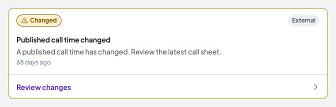

Put timing updates in the project conversation
Placement approved by Tom on 28 October 2026. Warning implementation verified on 29 October 2026. Open the finished app review. The references below document the original placement decision. Separate Studio settings and automatic timing policies remain under review.
Pattern reference inspected 28 October

Reference captured 28 October: existing call-time change system post. This is a reusable pattern reference, not a new deadline message. Full current screenshot opens on click.Chat already renders automatic project updates, with Internal and External audiences and a link to the relevant action. Ordinary messages and replies remain alongside them.
The project/message URL opens a specific existing message and its channel. This was verified on the Edit review request. One temporary asset-loading timeout recovered after reload; no source repair was needed.
Internal Chat · Exact-message destination · Crop provenance
Approved placement
| Moment | What the user sees |
|---|
| While completing the Brief | One-line suggested date before submission. Keep the explanation and review action in Project Chat rather than expanding the Brief into a detailed timing notice. Do not post messages for every draft edit. |
| After Brief submission | A Project Chat timing message contains the suggested date, a short reason and a Review date action. This remains a request for confirmation, not an agreed commitment. |
| Videos Deadline column | Keep the active stage countdown and final date. Add a compact warning with visible Timing needs review text and the approved alert icon. It links to the corresponding project Chat message. Keep this separate from the existing deadline-edit action, rather than nesting one interactive control inside another. |
| During production | Forecast risk first appears in Internal Chat for the producer. A producer-reviewed Client-safe update can be released to External Chat. Factual overdue status is visible to both, while internal WIP targets and private discussion remain restricted. |
Proposed message content
Illustrative message wording under the approved placement. No message posted to the prototype.
Delivery date needs reviewRequested 30 Oct · Suggested 5 Nov
Include a short, plain-language reason for the suggested date.
Review date Use the existing automatic system-post format. The update is generated by Brisk; Client-facing presentation retains Studio branding. Do not invent a new person or send the update as if it was written by a producer.
Keep warning state separate from unread state
Opening Chat can mark the message read. It must not clear an unresolved delivery risk. The approved rule is that reading does not resolve the warning. The proposed resolution conditions are date confirmation or schedule recovery; these still need implementation verification. The conversation and date-change history remain.
Keep one current warning per timing issue and post on meaningful changes. Avoid repeated reminders for every render, input change or elapsed minute. This recommendation adds no separate inbox or outbound-email requirement.
Implementation boundaries
The timing event, delivery-risk state and Deadline-to-message link are proposed additions. Existing Chat support does not mean these deadline features already exist. The placement is approved. Implementation and role-specific verification remain pending within the frontend mock scope.
Exact-message navigation is verified on the dedicated Chat route. Passing the same target into the global Chat drawer is an implementation detail still to verify. Customer and Freelancer permissions must be applied when resolving destinations. Customer-specific browser verification was not performed in this inspection.
Chat was inspected on a fresh local origin, 8781. Viewing a conversation automatically updates read state there; the user’s working origins and open drafts were not operated. No messages, reactions, invitations, settings or deadline records were submitted. No app code, assets or dependencies changed.
Recommendation register · Evidence and limitations